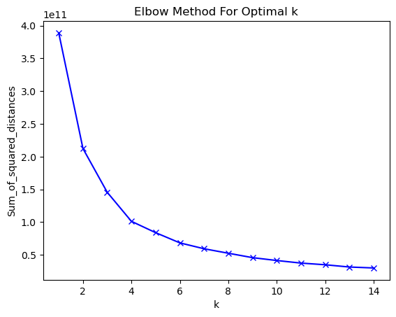
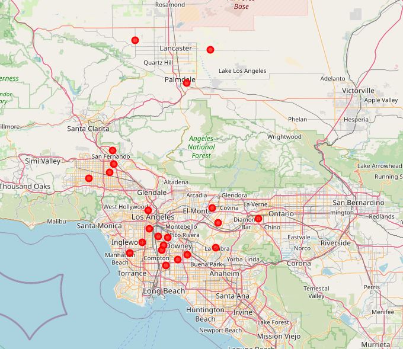

In this project I will try to give a recommendation on where to open a restaurant in Los Angeles County, CA. In addition, there shall be given a recommendation of which type of restaurant could be opened, based on existing restaurants in the area and generally popular restaurants in the whole county.
The decision on where to open a restaurant can be based on many factors, depending on the target group. For example, one could look for very dense populated areas, or areas with lots of wealthy citizens. Even the median age of the population can play a role.
I will make a decision based on the following conditions: - Find the area with a good balance between number of possible customers and a high median income (population is slightly more important than income) - the type of restaurant will be determined by the most recommended categories of food venue in Los Angeles County, CA and the number of already existing venues in the area
Data
I used three different datasets as basis for my analysis. Using these datasets I am able to work with the following features, among others: - A list of areas in Los Angeles County, CA based on the ZIP code - The number of citizens and households in every area - The estimated median income of every area - The latitude and longitude for every zip code in the county
I combined the following datasets for this: - 2010 Los Angeles Census Data - https://www.kaggle.com/cityofLA/los-angeles-census-data - Median Household Income by Zip Code in 2019 - http://www.laalmanac.com/employment/em12c.php - US Zip Code Latitude and Longitude - https://public.opendatasoft.com/explore/dataset/us-zip-code-latitude-and-longitude/information/
To analyse the existing food venues in the county, the Foursquare API is used. With this API we can provide the data to answer the following two questions: - What are the most recommended types of restaurants in the county? - What are the existing food venues categories in the area where we want to open a restaurant in?
Merging the three datasets as basis of the analytics
First, let’s merge all three datasets and get rid of unnecessary information. I will continue to use a single dataframe with the combined datasets as basis for further analysis.
The census data and the geodata for the US zip codes are available as csv files that I will read directly into a dataframe. The records for the median household income are available on a website, so I downloaded the data as a html file, which then is used to create a dataframe. As the median income has a dollar sign and can not be converted into a numeric value automatically because of its format, we have to do some data preparation.
import pandas as pdfrom pathlib import Pathcensus_path = Path.cwd().joinpath('resources').joinpath('2010-census-populations-by-zip-code.csv')html_path = Path.cwd().joinpath('resources').joinpath('Median Household Income By Zip Code in Los Angeles County, California.html')zip_path = Path.cwd().joinpath('resources').joinpath('us-zip-code-latitude-and-longitude.csv')# Dataset: 2010 Los Angeles Census Datadf_census = pd.read_csv(census_path)# Dataset: Median Household Income by Zip Code in 2019dfs = pd.read_html(html_path)df_income_all = dfs[0]# drop areas where the median income is missingdf_income_na = df_income_all[df_income_all['Estimated Median Income'].notna()]# Next step: clean the values in the median income column to retrieve# numeric values that can be used for clustering / calculationdf_income = df_income_na.drop(df_income_na[df_income_na['Estimated Median Income'] =='---'].index)df_income['Estimated Median Income'] =\ df_income['Estimated Median Income'].map(lambda x: x.lstrip('$'))df_income['Estimated Median Income'] =\ df_income['Estimated Median Income'].str.replace(',','')df_income["Estimated Median Income"] =\ pd.to_numeric(df_income["Estimated Median Income"])# Dataset: US Zip Code Latitude and Longitudedf_geodata = pd.read_csv(zip_path, sep=';')# Let's start by joining the geodata on the income dataset via the zip codedf_income_geo = df_census.join(df_income.set_index('Zip Code'), on='Zip Code')# Now join the census data with the income dataset and the geodatadataset_geo = df_income_geo.join(df_geodata.set_index('Zip'), on='Zip Code', how='left')# Let us only use the columns we need for the further analysis and ignore# the restprepared_ds = dataset_geo[["Zip Code", "City", "Community", "Estimated Median Income","Longitude", "Latitude", "Total Population", "Median Age","Total Males", "Total Females", "Total Households","Average Household Size"]]# last stop: let's drop records with missing datafinal_ds = prepared_ds.dropna(axis=0)final_ds.shape
(279, 12)
So the final dataframe now contains 279 areas with 12 features. Let’s get an overview on how the records are looking:
final_ds.head(5)
Zip Code
City
Community
Estimated Median Income
Longitude
Latitude
Total Population
Median Age
Total Males
Total Females
Total Households
Average Household Size
1
90001
Los Angeles
Los Angeles (South Los Angeles), Florence-Graham
43360.0
-118.24878
33.972914
57110
26.6
28468
28642
12971
4.40
2
90002
Los Angeles
Los Angeles (Southeast Los Angeles, Watts)
37285.0
-118.24845
33.948315
51223
25.5
24876
26347
11731
4.36
3
90003
Los Angeles
Los Angeles (South Los Angeles, Southeast Los ...
40598.0
-118.27600
33.962714
66266
26.3
32631
33635
15642
4.22
4
90004
Los Angeles
Los Angeles (Hancock Park, Rampart Village, Vi...
49675.0
-118.30755
34.077110
62180
34.8
31302
30878
22547
2.73
5
90005
Los Angeles
Los Angeles (Hancock Park, Koreatown, Wilshire...
38491.0
-118.30848
34.058911
37681
33.9
19299
18382
15044
2.50
Finding the most recommended food venue categories in the county
Now we will use the Foursquare API to find out what are the most recommended food venues in the county. For this we will go through every single area and get the recommended food venues in the vicinity of the area center.
# first, lets import the necessary libraries and the credentials for the APIfrom modules import foursquareimport requestsCLIENT_ID = foursquare.CLIENT_IDCLIENT_SECRET = foursquare.CLIENT_SECRETACCESS_TOKEN = foursquare.ACCESS_TOKENVERSION ='20210514'# Foursquare API versionLIMIT =100
# first, we use a list of the areas and without columns we don't needareas = final_ds.drop(['Estimated Median Income', 'Total ''Population','Median Age', 'Total Males', 'Total Females','Total Households', 'Average Household Size'], 1)areas.head()
FutureWarning:
In a future version of pandas all arguments of DataFrame.drop except for the argument 'labels' will be keyword-only
Cluster Label
Zip Code
City
Community
Longitude
Latitude
1
2
90001
Los Angeles
Los Angeles (South Los Angeles), Florence-Graham
-118.24878
33.972914
2
2
90002
Los Angeles
Los Angeles (Southeast Los Angeles, Watts)
-118.24845
33.948315
3
2
90003
Los Angeles
Los Angeles (South Los Angeles, Southeast Los ...
-118.27600
33.962714
4
2
90004
Los Angeles
Los Angeles (Hancock Park, Rampart Village, Vi...
-118.30755
34.077110
5
2
90005
Los Angeles
Los Angeles (Hancock Park, Koreatown, Wilshire...
-118.30848
34.058911
In the next code block, we will iterate through every area in the dataframe and get up to 50 recommendations per area. For that I use the “explore” endpoint of the Foursquare API. I use the categoryId and sortByPopularity parameters to only request food venues that are sorted by popularity in descending order.
venues_list = []for index, area in areas.iterrows(): url ='https://api.foursquare' \'.com/v2/venues/explore?&client_id={}&client_secret={}&v={}&ll={},' \'{}&radius={}&limit={}&offset={}&categoryId={}&sortByPopularity={}'\ .format( CLIENT_ID, CLIENT_SECRET, VERSION, area['Latitude'], area['Longitude'],1000, LIMIT, 0, '4d4b7105d754a06374d81259', 1) results = requests.get(url).json()["response"]['groups'][0]['items']for v in results:try: # try to extract the city, if there is one in the response city = v['venue']['location']['city']except: city = area['City']try: # try to extract the zip code, if there is one postalCode =str(v['venue']['location']['postalCode'])except: postalCode =str(area['Zip Code'])# build a list with all the columns I want to useif postalCode ==str(area['Zip Code']): venues_list.append(( area['Zip Code'], area['Community'], area['Latitude'], area['Longitude'], v['venue']['name'], v['venue']['categories'][0]['name'], city ))# create a dataframe from the results of the requestla_venues = pd.DataFrame(venues_list, columns=['Zip Code', 'Community','Zip Code Latitude', 'Zip Code Longitude', 'Venue','Venue Category', 'City'])
la_venues.head()
Zip Code
Community
Zip Code Latitude
Zip Code Longitude
Venue
Venue Category
City
0
90001
Los Angeles (South Los Angeles), Florence-Graham
33.972914
-118.24878
Mi Lindo Nayarit Mariscos
Mexican Restaurant
Los Angeles
1
90001
Los Angeles (South Los Angeles), Florence-Graham
33.972914
-118.24878
Jack in the Box
Fast Food Restaurant
Los Angeles
2
90001
Los Angeles (South Los Angeles), Florence-Graham
33.972914
-118.24878
Mi Lindo Nayarit
Seafood Restaurant
Los Angeles
3
90001
Los Angeles (South Los Angeles), Florence-Graham
33.972914
-118.24878
SUBWAY
Sandwich Place
Los Angeles
4
90001
Los Angeles (South Los Angeles), Florence-Graham
33.972914
-118.24878
El Senor Taco
Mexican Restaurant
Los Angeles
la_venues["Venue"].count()
8692
So we have found 8,692 recommendations for our 279 areas in Los Angeles County, CA. That are ~31 recommendations per area. Let’s extract the city and venue category and group the data by category, to find out about the distribution of the recommended food venue categories.
venues = la_venues[['City', 'Venue Category']]categories = venues.groupby('Venue Category').size().to_frame('Count').reset_index()sorted= categories.sort_values(by='Count', ascending=False) # Sort by Counttop10 =sorted.iloc[0:9] # Show the top 10 categoriestop10
Venue Category
Count
76
Mexican Restaurant
833
88
Pizza Place
575
40
Fast Food Restaurant
501
22
Chinese Restaurant
417
8
Bakery
347
98
Sandwich Place
342
1
American Restaurant
316
17
Café
304
13
Burger Joint
264
After that, we will visualize the distribution.
import plotly.express as pxfrom IPython.display import HTML, displaytop15 =sorted.iloc[0:14]fig = px.bar(top15, x="Venue Category", y="Count", title='Distribution of recommended food venue categories')HTML(fig.to_html(include_plotlyjs='cdn'))#fig.show(renderer='notebook_connected')
So with this data we can tell what food venue categories are recommended the most throughout Los Angeles County, CA.
We have prepared the following data, which we will use for further analysis: - a dataframe with areas in LA County, enriched with geodata, median income and census data - a dataframe with the most recommended food venue categories in the county
Methodology
In this project we will focus on finding a suitable area for a new restaurant in Los Angeles County, CA. The areas are defined by their US Zip Code. In addition, we will look at the most recommended food venue categories throughout the country, to suggest which type of restaurant could be opened. There won’t be a specific location in the chosen area recommended.
In the first step we have merged three different datasets, that provide data on the different areas in Los Angeles County. With this data it is possible to cluster the areas using information like median income, number of households and number of inhabitants. In addition, using Foursquare, we identified the most recommended food venue categories in the county.
The second step in the analysis is to cluster (using k-means clustering) the areas in the county and to describe the individual clusters. Using this method we support the process of finding a single area that looks promising for a new restaurant.
The third step is to pick a cluster that fits the chosen criteria most. The area shall be chosen under the premise of finding a good balance between estimated median income and number of potential customers. So the target is to find an area that has as many citizens as possible with the highest income possible. After an area was chosen, the distribution of local restaurant types in this area will be analysed. Combining this information with the categories of food venues that are popular throughout the county, a recommendation of the restaurant to open can be given.
Analysis
Getting an overview
First of all, let’s have a look on our dataset describing the areas.
final_ds.head()
Zip Code
City
Community
Estimated Median Income
Longitude
Latitude
Total Population
Median Age
Total Males
Total Females
Total Households
Average Household Size
1
90001
Los Angeles
Los Angeles (South Los Angeles), Florence-Graham
43360.0
-118.24878
33.972914
57110
26.6
28468
28642
12971
4.40
2
90002
Los Angeles
Los Angeles (Southeast Los Angeles, Watts)
37285.0
-118.24845
33.948315
51223
25.5
24876
26347
11731
4.36
3
90003
Los Angeles
Los Angeles (South Los Angeles, Southeast Los ...
40598.0
-118.27600
33.962714
66266
26.3
32631
33635
15642
4.22
4
90004
Los Angeles
Los Angeles (Hancock Park, Rampart Village, Vi...
49675.0
-118.30755
34.077110
62180
34.8
31302
30878
22547
2.73
5
90005
Los Angeles
Los Angeles (Hancock Park, Koreatown, Wilshire...
38491.0
-118.30848
34.058911
37681
33.9
19299
18382
15044
2.50
Now we are going to take a look at the areas with the highest income and the highest population.
# sort descending by the income and draw the top 15 areasincome_sorted = final_ds.sort_values(by='Estimated Median Income', ascending=False)income_top15 = income_sorted.iloc[0:14]fig = px.bar(income_top15, x="Estimated Median Income", y="City", orientation ="h", color='Estimated Median Income', title='Distribution of Estimated Median Income')HTML(fig.to_html(include_plotlyjs='cdn'))#fig.show(renderer='notebook_connected')
# sort descending by the population and draw the top 15 areaspop_sorted = final_ds.sort_values(by='Total Population', ascending=False)pop_top15 = pop_sorted.iloc[0:14]fig = px.bar(pop_top15, y="Total Population", x="City", orientation ="v", color='Total Population', title='Distribution of Population')HTML(fig.to_html(include_plotlyjs='cdn'))#fig.show(renderer='notebook_connected')
As we are primarily interested in the areas that have a high total population, let us add the income to this graph and get an overview on which areas in this group have the highest income.
In this graph the population determines the bubble size. So there are four areas that stand out:
City
Population
Median Income
Norwalk
105,6K
70,7K
Lake View Terrace, Sylmar
91,7K
74K
La Puente, Valinda
85K
71,2K
Hansen Hills, Pacoima
104K
64K
These four cities / neighbourhoods seem to be suitable areas, based on their combination of population and median income. We are going to see, if this assumption is confirmed going forward.
FutureWarning:
In a future version of pandas all arguments of DataFrame.drop except for the argument 'labels' will be keyword-only
Estimated Median Income
Total Population
Median Age
Total Households
Average Household Size
1
43360.0
57110
26.6
12971
4.40
2
37285.0
51223
25.5
11731
4.36
3
40598.0
66266
26.3
15642
4.22
4
49675.0
62180
34.8
22547
2.73
5
38491.0
37681
33.9
15044
2.50
sum_of_squared_distances = []K =range(1,15)for k in K: kmeans = KMeans(n_clusters=k, init="k-means++", random_state=0).fit(grouped_clustering) sum_of_squared_distances.append(kmeans.inertia_)#kmeans.labels_
C:\Users\schul\miniconda3\lib\site-packages\sklearn\cluster\_kmeans.py:881: UserWarning:
KMeans is known to have a memory leak on Windows with MKL, when there are less chunks than available threads. You can avoid it by setting the environment variable OMP_NUM_THREADS=2.
import matplotlib.pyplot as pltplt.plot(K, sum_of_squared_distances, 'bx-')plt.xlabel('k')plt.ylabel('Sum_of_squared_distances')plt.title('Elbow Method For Optimal k')plt.show()

According to the elbow method I chose a k of 6 going forward. So let’s do the clustering again with the determined k value. Then I will add the cluster labels to my dataset and print out a summarization of the created clusters.
# cluster with the determined Kkmeans = KMeans(n_clusters=6, init="k-means++", random_state=0).fit(grouped_clustering)# add the labels to the datasetfinal_ds.insert(0, 'Cluster Label', kmeans.labels_)
# create a dataframe for the defined clusterscluster_df = final_ds.groupby('Cluster Label').mean()cluster_df
Zip Code
Estimated Median Income
Longitude
Latitude
Total Population
Median Age
Total Males
Total Females
Total Households
Average Household Size
Cluster Label
0
90944.044444
51793.866667
-118.206034
34.081385
18356.955556
35.786667
9296.088889
9060.866667
6044.355556
2.850444
1
90624.000000
155063.444444
-118.425995
34.024770
17967.666667
43.838889
8777.833333
9189.833333
7020.722222
2.479444
2
90645.573770
52440.918033
-118.253427
34.038718
49920.491803
32.331148
24696.983607
25223.508197
15608.819672
3.248852
3
91028.756410
79091.974359
-118.215469
34.065151
29618.141026
38.174359
14394.820513
15223.320513
10698.910256
2.776026
4
90971.672727
105903.872727
-118.327527
34.099429
29382.745455
41.198182
14361.127273
15021.618182
11328.072727
2.540727
5
91153.090909
57912.863636
-118.190515
34.113848
83146.500000
30.468182
41257.500000
41889.000000
22069.545455
3.768182
Let us clean this up a bit and add a new column, that will help us to chose a cluster going forward.
SettingWithCopyWarning:
A value is trying to be set on a copy of a slice from a DataFrame.
Try using .loc[row_indexer,col_indexer] = value instead
See the caveats in the documentation: https://pandas.pydata.org/pandas-docs/stable/user_guide/indexing.html#returning-a-view-versus-a-copy
Estimated Median Income
Total Population
Median Age
Total Households
Average Household Size
Decision Factor
Cluster Label
5
57912.86
83146.50
30.47
22069.55
3.77
57783.02
4
105903.87
29382.75
41.20
11328.07
2.54
37340.96
1
155063.44
17967.67
43.84
7020.72
2.48
33433.54
2
52440.92
49920.49
32.33
15608.82
3.25
31414.52
3
79091.97
29618.14
38.17
10698.91
2.78
28110.69
0
51793.87
18356.96
35.79
6044.36
2.85
11409.33
Looking at these clusters, they can be described as the following:
Name
Income
Population
Age
Cluster 4
High
Medium
Older
Cluster 0
Low
Low
Young
Cluster 1
Very High
Low
Older
Cluster 5
Medium
Very High
Very Young
Cluster 2
Low
High
Very Young
Cluster 3
High
Medium
Young
So based on this information I am going to choose Cluster 5 for further evaluation and as the cluster where I will pick an area from. This cluster has a medium income combined with a very high population. It also contains the youngest median age, which also can be considered for choosing the food venue category.
This cluster contains 22 areas in Los Angeles County, CA. We are going to have a look on them on the map using Folium.
from geopy.geocoders import Nominatim# initialize the mapaddress ='Los Angeles County, CA'geolocator = Nominatim(user_agent="la_explorer")location = geolocator.geocode(address)latitude = location.latitudelongitude = location.longitude
import matplotlib.cm as cmimport matplotlib.colors as colorsimport foliumimport numpy as np# create mapmap_clusters = folium.Map(location=[latitude, longitude], zoom_start=11)cluster5 = final_ds.loc[final_ds['Cluster Label'] ==5]# set color scheme for the clusters, 6 is our number of clustersx = np.arange(6)ys = [i + x + (i*x)**2for i inrange(6)]colors_array = cm.rainbow(np.linspace(0, 1, len(ys)))rainbow = [colors.rgb2hex(i) for i in colors_array]# add markers to the mapmarkers_colors = []for lat, lon, poi, cluster inzip(cluster5['Latitude'], cluster5['Longitude'], cluster5['Zip Code'], cluster5['Cluster Label']): label = folium.Popup(str(poi) +' Cluster '+str(cluster), parse_html=True) folium.CircleMarker( [lat, lon], radius=5, popup=label, color=rainbow[cluster], fill=True, fill_color=rainbow[cluster], fill_opacity=0.7).add_to(map_clusters)#map_clusters
from IPython.display import Imagefrom pathlib import Pathpath = Path.cwd().joinpath('png').joinpath('2021-06-24-capstone.png')Image(filename=path)

As one can see, most of our areas in more densely populated areas and in the vicinity of the city of Los Angeles. Now let us add the “decision factor” again and calculate it for every single region in cluster 5.
SettingWithCopyWarning:
A value is trying to be set on a copy of a slice from a DataFrame.
Try using .loc[row_indexer,col_indexer] = value instead
See the caveats in the documentation: https://pandas.pydata.org/pandas-docs/stable/user_guide/indexing.html#returning-a-view-versus-a-copy
Cluster Label
Zip Code
City
Community
Estimated Median Income
Longitude
Latitude
Total Population
Median Age
Total Males
Total Females
Total Households
Average Household Size
Decision Factor
132
5
90650
Norwalk
Norwalk
70667.0
-118.08
33.91
105549
32.5
52364
53185
27130
3.83
89505.97
214
5
91342
Sylmar
Los Angeles (Lake View Terrace, Sylmar), Kagel...
74050.0
-118.43
34.31
91725
31.9
45786
45939
23543
3.83
81506.84
211
5
91331
Pacoima
Los Angeles (Arleta, Hansen Hills, Pacoima)
63807.0
-118.42
34.25
103689
29.5
52358
51331
22465
4.60
79393.01
266
5
91744
La Puente
City of Industry, La Puente, Valinda
71243.0
-117.94
34.03
85040
30.9
42564
42476
18648
4.55
72702.06
309
5
93536
Lancaster
Del Sur, Fairmont, Lancaster, Metler Valley, N...
79990.0
-118.33
34.73
70918
34.4
37804
33114
20964
3.07
68072.77
129
5
90631
La Habra
La Habra Heights
83629.0
-117.95
33.93
67619
34.8
33320
34299
21452
3.13
67858.91
85
5
90250
Hawthorne
Hawthorne (Holly Park)
56304.0
-118.35
33.91
93193
31.9
45113
48080
31087
2.98
62965.66
254
5
91706
Baldwin Park
Baldwin Park, Irwindale
65755.0
-117.97
34.09
76571
30.5
37969
38602
17504
4.35
60419.11
99
5
90280
South Gate
South Gate
52321.0
-118.19
33.94
94396
29.4
46321
48075
23278
4.05
59266.72
158
5
90805
Long Beach
Long Beach (North Long Beach)
50914.0
-118.18
33.87
93524
29.0
45229
48295
26056
3.56
57140.17
# draw the top 5 areas according to income and populationcluster5_top5 = cluster5_sorted.iloc[0:5]fig = px.bar(cluster5_top5, x='Decision Factor', y='Community', color='Average Household Size' )HTML(fig.to_html(include_plotlyjs='cdn'))#fig.show(renderer='notebook_connected')
So there are three areas that stand out: - Norwalk, with a population of 105,6k and an income of $70,6k; it has the oldest median age of the three communities and the largest population. - Lake View Terrace in Sylmar, with a population of 91,7k and an income of $74k; it has the highest income of the group and the lowest population. - Hansen Hills in Pacoima, with a population 104,7k and an income of $63,8k. It has the youngest median age of the three and is very close to Norwalk in terms of population, but it has the lowest income.
Looking back at the initial analysis we did for all areas in Los Angeles County, we find that these three areas were also part auf the group we found, based on their features. So through the clustering we could confirm our initial findings.
Exploring local food venues
Using Foursquare, we are going to query the existing food venues in the three areas.
We will use a radius of 4 kilometres around the center of every community. I will also use the city and zip code from the response to filter out results from Foursquare that actually do not belong to the city community we are exploring.
import itertoolstop3 = cluster5_sorted.iloc[0:3]venues_list=[]# Get the local food venues for all 3 of our communitiesfor _, record in top3.iterrows(): offset =0for _ in itertools.repeat(None, 4): url ='https://api.foursquare' \'.com/v2/venues/explore?&client_id={}&client_secret={}&v={}&ll={},' \'{}&radius={}&limit={}&offset={}&categoryId={}'.format( CLIENT_ID, CLIENT_SECRET, VERSION, record['Latitude'], record['Longitude'], 4000, 50, offset, '4d4b7105d754a06374d81259')# increase the offset for the next run offset +=50# try to read the items from the Foursquare response and loop over themtry: results = requests.get(url).json()["response"]['groups'][0]['items']for v in results:# get the city name from the Foursquare response, if possibletry: city = v['venue']['location']['city']except: city =str(record['City'])# get the zip code from the Foursquare response, if possibletry: postalCode =str(v['venue']['location']['postalCode'])except: postalCode =str(record['Zip Code']) venues_list.append((record['Zip Code'], record['Community'], record['Latitude'], record['Longitude'], v['venue']['name'], v['venue']['categories'][0]['name'], city, postalCode))except:# there are no more results that Foursquare can deliverbreak# create a dataframe from all venues we have found for all 3 areasnearby_venues = pd.DataFrame(venues_list, columns=['Zip Code', 'Community','Zip Code Latitude', 'Zip Code Longitude', 'Venue','Venue Category', 'City', 'PostalCode'])nearby_venues.count()
Zip Code 364
Community 364
Zip Code Latitude 364
Zip Code Longitude 364
Venue 364
Venue Category 364
City 364
PostalCode 364
dtype: int64
# only keep the records that belong to our 3 chosen citiesvenues_cleaned = nearby_venues.loc[ nearby_venues['City'].isin(['Norwalk', 'Sylmar', 'Pacoima'])]venues_cleaned.count()
Zip Code 160
Community 160
Zip Code Latitude 160
Zip Code Longitude 160
Venue 160
Venue Category 160
City 160
PostalCode 160
dtype: int64
We found 160 food venues across all 3 areas. In the next step we will group the food venues by category and city. We can use the count of food venues per category to visualize the distribution across the communities.
# extract city name and food venue categorycategs = venues_cleaned[['City', 'Venue Category']]# count the number of restaurants per city and categorycategs_count = categs.groupby(['City', 'Venue Category']).size().to_frame('Count').reset_index()# sort the result by city and countcategs_sorted = categs_count.sort_values(by=['City', 'Count'], ascending=False)categs_sorted
City
Venue Category
Count
44
Sylmar
Mexican Restaurant
12
45
Sylmar
Pizza Place
7
47
Sylmar
Sandwich Place
6
38
Sylmar
Chinese Restaurant
5
35
Sylmar
American Restaurant
3
43
Sylmar
Fried Chicken Joint
3
39
Sylmar
Donut Shop
2
40
Sylmar
Fast Food Restaurant
2
41
Sylmar
Food
2
36
Sylmar
Asian Restaurant
1
37
Sylmar
Breakfast Spot
1
42
Sylmar
Food Court
1
46
Sylmar
Restaurant
1
48
Sylmar
Seafood Restaurant
1
49
Sylmar
Snack Place
1
50
Sylmar
Sushi Restaurant
1
51
Sylmar
Taco Place
1
52
Sylmar
Thai Restaurant
1
28
Pacoima
Mexican Restaurant
9
25
Pacoima
Fast Food Restaurant
7
31
Pacoima
Sandwich Place
3
32
Pacoima
Taco Place
3
23
Pacoima
Burger Joint
2
30
Pacoima
Pizza Place
2
20
Pacoima
American Restaurant
1
21
Pacoima
BBQ Joint
1
22
Pacoima
Breakfast Spot
1
24
Pacoima
Chinese Restaurant
1
26
Pacoima
Food Court
1
27
Pacoima
Fried Chicken Joint
1
29
Pacoima
Middle Eastern Restaurant
1
33
Pacoima
Thai Restaurant
1
34
Pacoima
Wings Joint
1
7
Norwalk
Fast Food Restaurant
15
13
Norwalk
Mexican Restaurant
12
15
Norwalk
Sandwich Place
8
14
Norwalk
Pizza Place
7
5
Norwalk
Chinese Restaurant
5
6
Norwalk
Donut Shop
5
0
Norwalk
American Restaurant
4
1
Norwalk
Asian Restaurant
3
4
Norwalk
Burger Joint
3
11
Norwalk
Fried Chicken Joint
2
2
Norwalk
Bakery
1
3
Norwalk
Breakfast Spot
1
8
Norwalk
Food
1
9
Norwalk
Food Court
1
10
Norwalk
Food Truck
1
12
Norwalk
Korean Restaurant
1
16
Norwalk
Steakhouse
1
17
Norwalk
Sushi Restaurant
1
18
Norwalk
Taco Place
1
19
Norwalk
Thai Restaurant
1
categs_graph = categs_sorted.loc[categs_sorted['Count'] >1]fig = px.bar(categs_graph, y="Venue Category", x="Count", title='Combined Distribution of Food Venues', orientation='h', color ='City' )HTML(fig.to_html(include_plotlyjs='cdn'))#fig.show(renderer='notebook_connected')
Having a look at the distribution of food venues across the three areas, we can make the following observations: - Mexican restaurants are the most common food venue overall - Fast Food restaurants are the second most common venue, but Norwalk has by far the most - Pacoima has the least restaurants overall and Norwalk the most, despite both of them are very close in population - There seems to be space for a Chinese or American Restaurant or a Donut Shop in Pacoima - Even sandwich and pizza places are not very common in Pacoima - Opening another fast food restaurant or mexican restaurant does not seem like a good idea
Again, let us have a look on the most recommended food venues in the county for comparison:
Bakeries are the fith most recommended venue category, but there is currently a maximum of 1 per area. So this could be a good option in any of the three communities.
Mexican and fast food restaurants are already very common and should not be chosen
There is an opportunity for a pizza place or a chinese resaturant in Pacoima
Pacoima in general has few food venues. Looking at the median income, any low price food venues could be a good opportunity.
Norwalk would be the best option according to population and income, but it is already very crowded with restaurants. A bakery seems to be the best option there.
There are also multiple options for sushi restaurants, burger joints, japanese or thai restaurants in all three areas. Overall not looking bad!
Results and Discussion
Our analysis shows that there is a high variability in population, income and median age in the different areas of Los Angeles County, CA. So it was possible to identify multiple areas that fit the criteria of a relatively high median income and a high population. Using census and income data of all areas in Los Angeles County, we did a clustering to identify similar areas. By analysing the formed clusters there have been three areas identified that fit the criteria best. Norwalk, Lake View Terrace in Sylmar and Hansen Hills in Pacoima.
They are slightly different in income, population and age and also very different in their local distribution of available food venues. The final area could be picked on which of these factors matters to the stakeholders most. I will pick Norwalk as the final area for a food venue, because it offers the best combination of a high population and a good income out of these three areas.
By analysing the most recommended food venue categories across the whole county, we found that mexican restaurants are by far the most often recommended venue. After them pizza places, fast food restaurants, chinese restaurants and bakeries follow in that order. To give a recommendation for a food venue to open in Norwalk, we can compare the local distribution of food venues what was recommended the most in the county. By looking at Norwalk we found that there are already many mexican restaurants (12) and fast food restaurants (15). Pizza places (7) and chinese restaurants (5) area also recommended in a higher number, so opening a restaurant in one of those categories would be better, but there is still some competition. What stands out is that there is currently only one bakery recommended by Foursquare in Norwalk. Looking at the distribution of recommendations in the county, bakeries are the fifth most recommended venue category. Because of this, I would recommend opening a bakery in Norwalk, CA to the stakeholders.
Purpose of this analysis was to identify a possible area and food venue type for a new restaurant in Los Angeles County, CA based on a very limited amount of factors. Analysing census data and existing food venues is only one part on the way to find a location for opening a new restaurant. Other factors that also play a role are for example available spaces, rent costs, other venues in the area. This analysis serves as a starting point for finding possible locations, but further analysis needs to be done by the stakeholders.
Conclusion
The purpose of this project was to find a possible location for a new restaurant in Los Angeles County, CA. The desire from the stakeholders was to identify locations that offer a good balance between median income and number of inhabitants, although income shall be rated slightly more important than population. In addition, the idea was to identify possible food venue categories by comparing recommended venues across the country with the local venues in the different areas. So for this there were census and income data combined to identify areas that fit the criteria. A clustering was performed, to group the communities in Los Angeles County using their income and population. Then the cluster was chosen that fit the former mentioned criteria the most. From this cluster the top 3 areas were chosen, that had the best balance between income and population. This way the best three candidates for a new restaurant location were identified.
The next step was to analyze the local food venue categories. For this the local venues in a 4 km radius were identified and grouped. This grouping was then compared with the distribution of the most recommended food venue categories across the whole county. In doing so, opportunities for new restaurants in any of the three chosen communities have been identified.
The final decision can be made by the stakeholders, based on the recommendations given in this project. This decision for a locality can be based on income, population or median age of the areas. The decision for a venue category can be based on popular venues across the county, and the gaps in the local food offerings that have been identified.